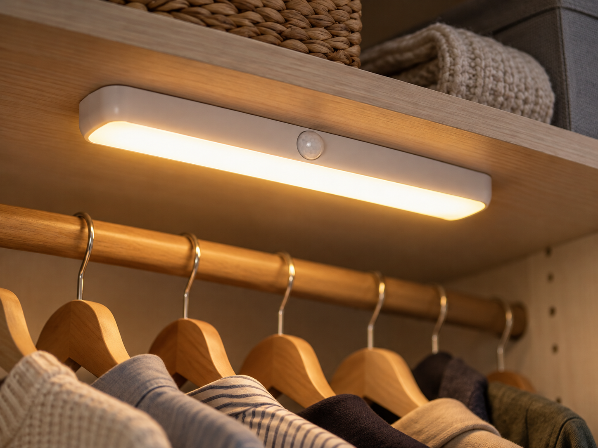
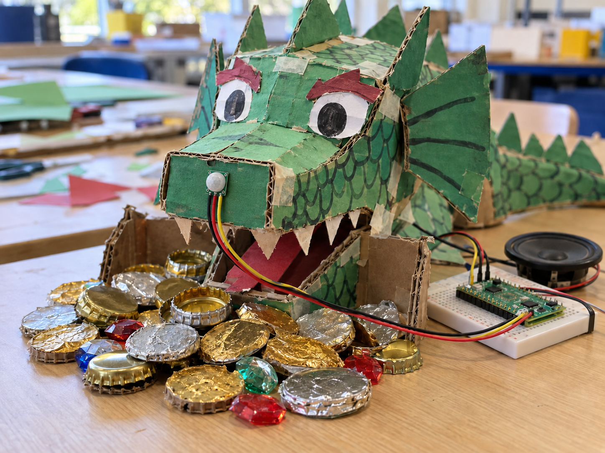

Wardrobe light
DetectMovement in the wardrobe
DecideIs someone reaching in?
DoTurn on the light
An AM312 is a tiny PIR sensor that notices warm bodies moving nearby.
PIR means passive infrared. Its faceted lens divides the view into zones, so a person or animal moving between them makes the output switch on.
The complete AM312 module runs from 3V3 and uses very little power. Its sensitivity and roughly two-second output pulse are fixed.


from gpiozero import MotionSensor
pir = MotionSensor(14)
moved = pir.motion_detectedmoved is True or False. Use pir.when_motion and pir.when_no_motion to run functions when it changes. The AM312 has no sensitivity or delay dials; OUT normally stays high for about two seconds after movement.